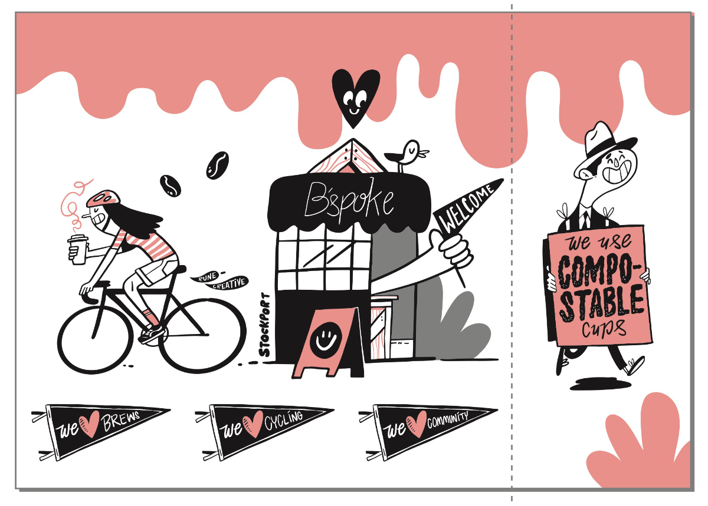
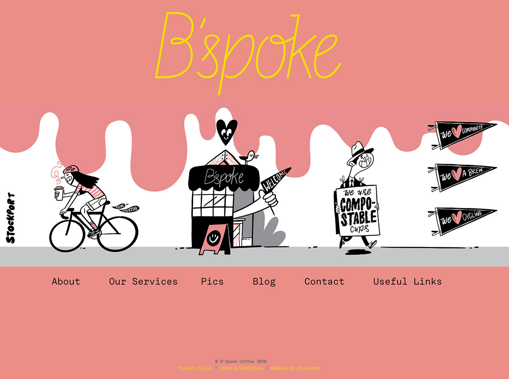
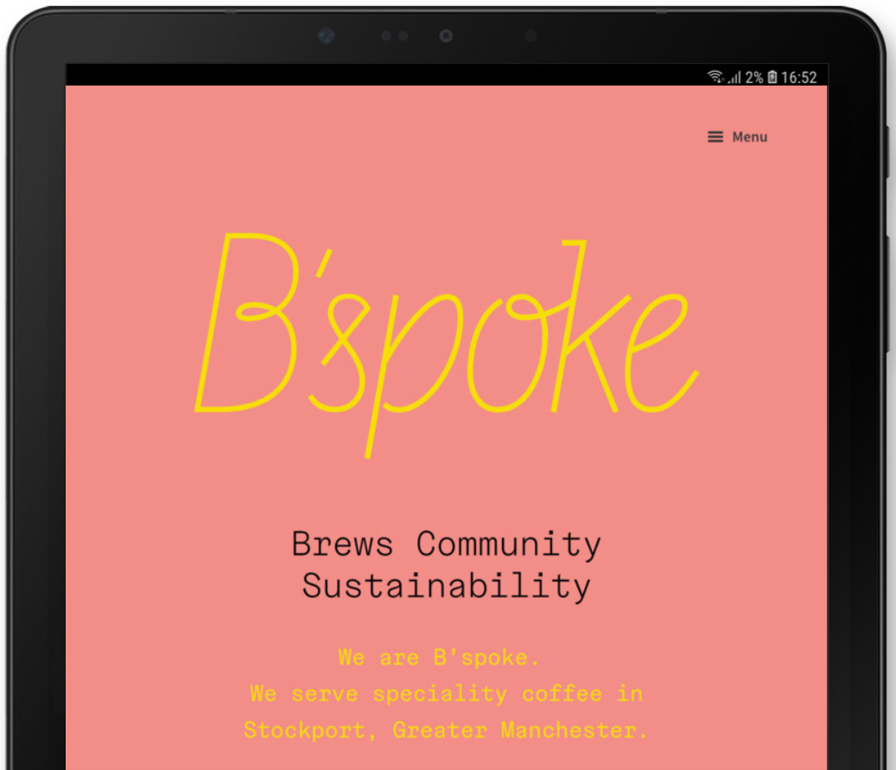
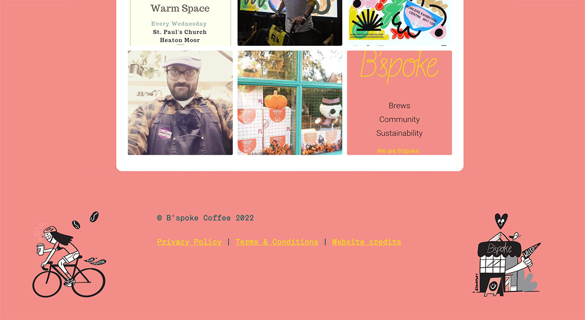

Ben Bayliss
Website Design
As a dedicated web designer, I have spent years refining my skills in creating visually captivating websites. While my expertise lies in design, I also possess a working knowledge of coding, which allows me to bring my designs to life.
Throughout my web design career, I have had the opportunity to work on various exciting projects. One notable example is B'Spoke Coffee, where I successfully developed an e-commerce site, overseeing the design and implementation process.
B'spoke Coffee re-design 2022
B'spoke Coffee have had three websites. I created all of them.
The first was an off the shelf free Wordpress theme, that I tweaked and customised, and allowed them to get a fully funtioning website and blogging platform up and running with very little fuss and minimal cost - which as a new company suited them.

Christmas site
The second, was a special one off Christmas site that used WooCommerce within Wordpress and featured their updated logo and concept by designer Adi Wright – http://www.adiwright.co.uk, but was otherwise left to me to design and build. It was intended to and became the initial starting point of the new website. I had never build a WooCommerce sites before.
Adi's Supplied concept below, along with this rough drawing from Nick at B'spoke

Along with this rough drawing from Nick at B'spoke.
Here is how it turned out (screenshot so not showing header or footer)

The third site
The third site was a combination of the previous Christmas site, using the new logo, and a concept created by local artist Pip Claffay – https://www.rune-creative.co.uk
These were her main concepts.

Along with this idea she had for a website header.

I took this idea and created a mockup, and while there are some nice graphics it seemed a little busy.

I actually created a variety of mockups, some ideas below. All too busy.

I needed to simplify the ideas, but liked the dripping graphic, so tried removing that from the homepage, and using it on the inner product pages. I took the dripping pattern and expanded it to create a repeating pattern, so it could work on any size screen. This worked well and is used in the final site.

Then for the homepage, similar to the Christmas design, I removed everything except the logo, and added a menu. Below is the tablet view.

I put some of the original graphics in the footer of the desktop site (mobile design I kept simpler).

I'd been learning to use GSAP javascript animation library, and put my knowledge to good use by animating Pips bicycle graphic, which flies across the screen as you scroll down, and flips direction depending on which way you scroll. It's a fun thing to come across and gives the site more personality. I didn't charge for adding this.
Aside from these designs, I mostly kept WooCommerce's default shop design as the basis for the page layouts. I made minor design tweaks, such as colours and rounded corners, but the existing WooCommerce shop interface is clean, works well.
I had to re-learn WooCommerce, and then learn how to apply customised requests such as free postage over £25, except for subscriptions which have postage included - luckily Wordpress has plugins for every need, and I was able to add snippets of PHP as well (I'm not a PHP programmer, but knowledgeable enough to do simple tweaks.). I also included lessons on how they can update the website themselves.
B'spoke are very happy with their website.
You can visit it at bspokecoffeehouse.co.uk
--------------
Website Design
As a dedicated web designer, I have spent years refining my skills in creating visually captivating websites. My expertise lies in design, complemented by a working knowledge of coding, which allows me to bring my designs to life.
Throughout my web design career, I have had the opportunity to work on various exciting projects. One notable example is my work with B'Spoke Coffee, where I successfully developed an e-commerce site, overseeing the design and implementation process.
B'Spoke Coffee Redesign 2022
Three Unique Websites, One Designer
B'Spoke Coffee's digital journey underwent three distinct phases, and I was at the helm of all three projects. The first iteration involved a cost-effective approach using an off-the-shelf free WordPress theme, which I tweaked and customized to establish a fully functional website and blogging platform for the new company.
Original site:
For the second special Christmas site, I drew inspiration from designer Adi Wright's logo design and rough concept to create a unique and captivating experience using WooCommerce within WordPress. Although it was my first time building a WooCommerce site, the result was a resounding success.
Adi's Supplied concept below, along with this rough drawing from Nick at B'spoke

Here is how it turned out (screenshot so not showing header or footer)
The third site was a masterful fusion of the previous Christmas concept, elevated by the brilliant vision of local artist Pip Claffay – https://www.rune-creative.co.uk. Drawing inspiration from Pip's captivating dripping graphic, I thoughtfully integrated her concepts into the design, resulting in a mesmerizing visual element. For a touch of fun and personality, I animated one of Pip's bicycle graphics using the GSAP javascript animation library, which reacts to users scrolling
With WooCommerce as the backbone, I applied custom requests, such as free postage over £25 (excluding subscriptions) and offered lessons on how B'Spoke could update the website themselves. The end result was a clean and functional shop interface that showcases their products beautifully.
B'Spoke Coffee expressed their utmost satisfaction with the final product, and you can visit their website at bspokecoffeehouse.co.uk.
Pip's concepts.
Along with this idea she had for a website header.
I took this idea and created a mockup, and while there are some nice graphics it seemed a little busy.
I actually created a variety of mockups, some ideas below. All too busy.
I needed to simplify the ideas, but liked the dripping graphic, so tried removing that from the homepage, and using it on the inner product pages. I took the dripping pattern and expanded it to create a repeating pattern, so it could work on any size screen. This worked well and is used in the final site.
Then for the homepage, similar to the Christmas design, I removed everything except the logo, and added a menu. Below is the tablet view.
I put some of the original graphics in the footer of the desktop site (mobile design I kept simpler).